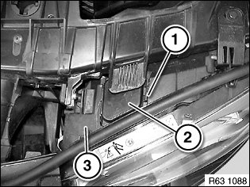
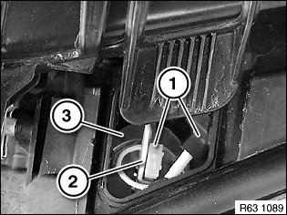
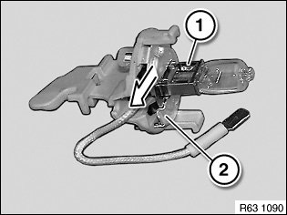

63 99 160 Replacing Bulb For Front Left (or Right) Turning Lights
63 99 160 Replacing Bulb For Front Left (or Right) Turning Lights

WARNING:
Version with xenon headlights: Danger to life due to high voltage. Therefore, before removing, disconnect all components from the voltage supply (lighting system and ignition off).
Work on the entire xenon lighting system (control unit, ignition unit with bulb) may only be carried out by qualified personnel.
Follow instructions for handling light bulbs (exterior lights).

Use suitable tool to release retaining clip (1) and detach cover (2) from headlight (3).
Installation note:
Cover (2) must be correctly engaged.
Check seal.
Replace cover (2), if applicable.
Observe notes regarding replacement of the protective cap.

Disconnect plug connection (1).
Turn bulb holder (2) counterclockwise and remove from headlight (3).
Installation note:
Make sure bulb holder (2) is correctly seated in headlight (3).

Pull bulb (1) in direction of arrow out of bulb holder (2).
Installation note:
Note bulb type.